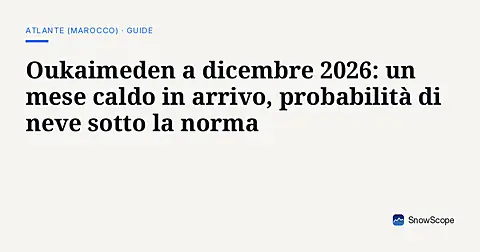

Bollettini neve · Previsioni neve
Bollettini neve quotidiani per sciatori: dove c'è neve, cosa arriva e dove sciare, dalla mappa neve di SnowScope e dalle stazioni di misura. Ogni numero viene dai dati del giorno.


A Andermatt (2963 m) la previsione indica 75 mm di precipitazioni dal 15 novembre al 20 novembre. Nelle ore di pioggia lo zero termico è vicino a 2160

Courmayeur guida le previsioni con 88 cm in 72 ore; la profondità della neve è al 142 percento della norma per metà novembre secondo i dati del 15 novembre.

Le condizioni della neve a La Rosière nella nostra corsa del modello dell'11 novembre: 24 cm in vetta (2799 m), metà montagna e paese senza neve, e una previsione a sette giorni di 108 cm in vetta e 61 cm a metà montagna. Il versante soleggiato del Piccolo San Bernardo in numeri.

La neve all'Alpe Devero (Ossola, Piemonte) secondo il nostro modello: 2 cm in vetta (2201 m), niente più in basso, 36 cm di neve fresca prevista in vetta nei prossimi sette giorni. La piccola località senza auto e il suo inverno abituale in numeri.

Ancora niente neve a Oukaïmeden: 0 cm a tutte e tre le quote, nulla negli ultimi sette giorni, nulla nella settimana che viene. Cosa porta un novembre abituale nell'Alto Atlante e quando puntare allo sci.

La neve di oggi a Livigno, cosa dice la previsione stagionale europea per dicembre e perché a Natale la quota vince su un mese caldo.

La neve di oggi a Cortina, la previsione stagionale europea per dicembre e le nostre probabilità di un Natale bianco nelle Dolomiti orientali.

Dove dicembre 2026 sembra più o meno nevoso nelle Dolomiti, dalla Val Gardena a Cortina: la previsione stagionale europea, la nostra mappa e le probabilità di un Natale bianco.

Quanta acqua potrebbe tenere la neve dell'Atlante a febbraio 2027: la previsione stagionale europea è di circa 3 °C più calda e più umida a ovest e a sud, e le probabilità di neve restano basse sui bacini del Marocco.

La previsione stagionale europea rende gennaio 2027 circa 2 °C più caldo sull'Atlante. La nostra tendenza per altezza della neve, acqua nella neve e acqua immagazzinata per i fiumi del Marocco.

Il Bou Iblane è ancora spoglio. La previsione stagionale europea vede un dicembre nettamente più caldo, e su tutto il Medio Atlante nevoso le nostre probabilità tendono a meno neve.

Dove dicembre 2026 sembra più o meno nevoso dal Montana al New Mexico: la previsione stagionale europea e la nostra mappa, con Colorado, Utah e Rocciose del Nord.
Il manto nevoso dagli Écrins alle Alpi Marittime e al Piemonte si riempirà come al solito a dicembre 2026? La previsione stagionale europea e la nostra mappa, montagna per montagna.

Ancora niente neve a Oukaimeden. La previsione stagionale europea vede un dicembre più caldo sull'Alto Atlante, e la nostra mappa mostra probabilità più basse su quasi tutte le cime.

La neve di oggi ai Grands Montets, la previsione stagionale europea per dicembre e la nostra mappa di dove dicembre sembra più o meno nevoso intorno al Monte Bianco.